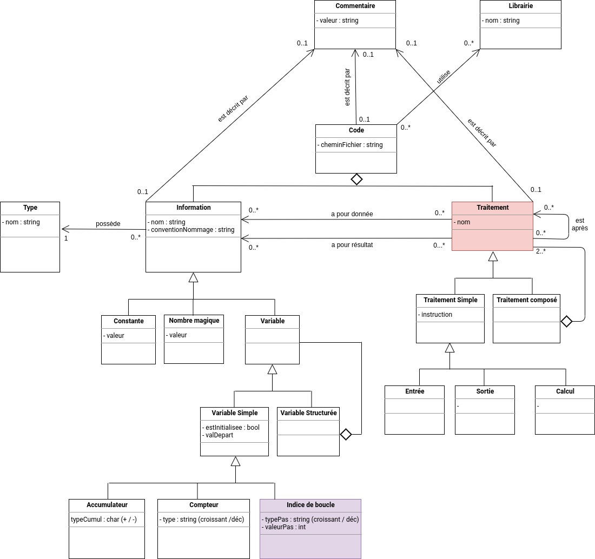

Classes de haut niveau
Cette partie du diagramme décrit les éléments de haut niveau structurant un code source : code, information, traitement, variable....
Cette partie du diagramme décrit les éléments de haut niveau structurant un code source :

La classe Code
- Un Code est écrit dans un fichier ;
- Un Code peut être décrit par un Commentaire situé en entête ;
- Un Code peut utiliser des Librairie ;
- Un Code est composé d'Information et de Traitement.
La classe Information
- Une Information possède un Type (entier, chaîne de caractères...) ;
- Une Information peut prendre la forme d'une Constante, d'une ValeurEnDur ou d'une Variable ;
- Une Information peut jouer le rôle de donnée pour un Traitement spécifique ;
- Une Information peut jouer le rôle de résultat pour un Traitement spécifique.
La classe Variable
- Une Variable peut être une VariableSimple (l'âge d'une personne par exemple) ou une VariableStructuree (l'adresse d'une personne par exemple);
- Une VariableSimple peut éventuellement jouer le rôle d'un Accumulateur, d'un Compteur ou d'un IndiceDeBoucle ;
- Une VariableStructuree est composée de plusieurs Variable qui peuvent à leur tour être des VariableSimple ou des VariableStructuree. Cette structuration permet de représenter des enregistrements, des types énumérés, des tableaux, des classes...
La classe Traitement
- Un Traitement peut être ordonné séquentiellement (avant / après) vis-à-vis d'un autre Traitement ;
- Un Traitement peut nécessiter des Information en donnée ;
- un Traitement peut produire des Information en résultat ;
- Un Traitement peut être un TraitementSimple (une instruction) ou un TraitementCompose ;
- Un TraitementSimple est soit une instruction d'entrée (une saisie par exemple), soit une instruction de sortie (un affichage par exemple), soit une instruction de calcul (une affectation par exemple) ;
- Un TraitementCompose est composé de plusieurs Traitement qui peuvent à leur tour être des TraitementSimple ou des TraitementCompose.